Alma Mater Studiorum - Università di Bologna
Computer Science and Engineering Department (DISI)
Domain-Driven Design
05 - Tactical Buildings Blocks
A. Croatti
Laboratory of Software Systems
A.Y. 2020/2021
Outline
-
Tactical Building Blocks Overview
-
Tactical Building Blocks Details (Part 1)
- Value Objects
- Entities
- Domain Services
- Domain Events
- Aggregates
-
An Example: Tactical DDD to design microservices
-
Tactical Building Blocks Details (Part 2)
- Factories
- Repositories
- Event Sourcing
Tactical Building Blocks
Overview
Domain-Driven Design Tactical Patterns
-
Introduced by E. Evans to enable the creation of effective domain models
- are built around the OOP/FP techniques, best practices, …
- they represent a guideline for DDD designers/developers
-
Their role is to help to manage complexity and ensure clarity behavior within the domain model
- each building block is designed to have a single responsibility
- they constitute the metamodel developers can use to map domain concepts into the code, according to the UL
Building Blocks Categorization
-
Domain Modeling Patterns – represent the policies and logic within the problem domain (relationships among objects, model rules, …) and helping to achieve the MDD
- Entities, Value Objects, Domain Services, Modules
-
Lifecycle Patterns – deal with the creation and persistence of the objects that represent the domain structure
- Aggregates, Factories, Repositories
-
Emerging Patterns – collateral patterns respect to Evans’ original definition
- Domain Events, Event Sourcing
Evans’ Original Building Blocks

A modern view on Building Blocks
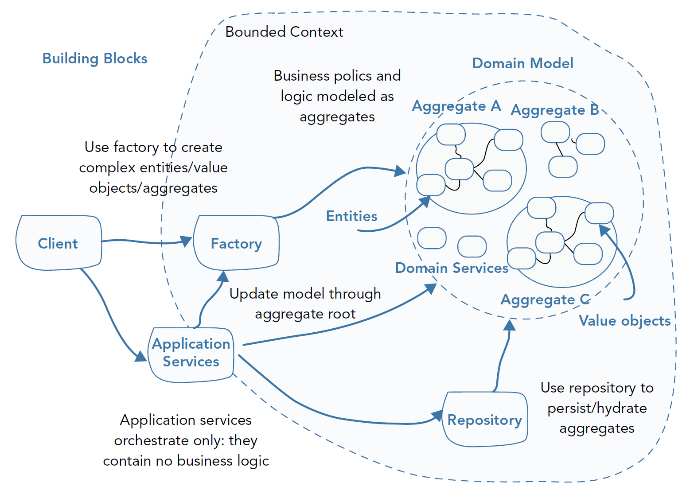DDD into the code - an Example
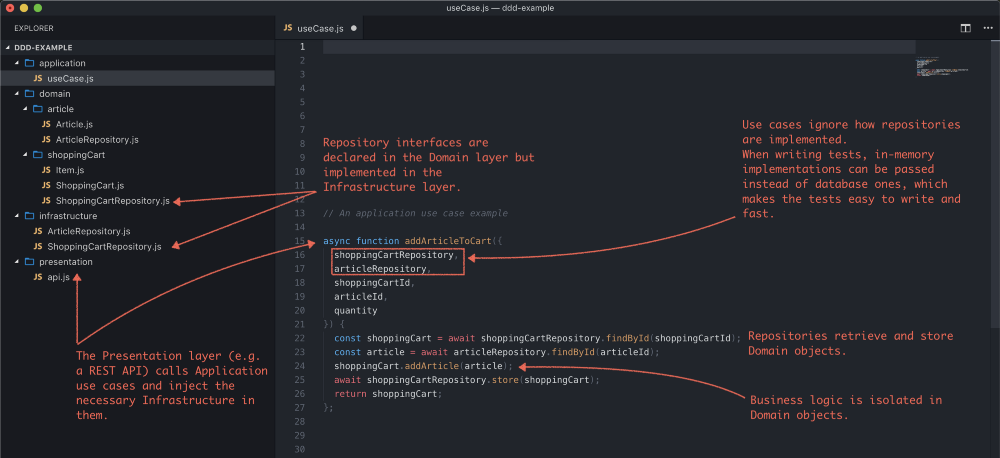Value Objects
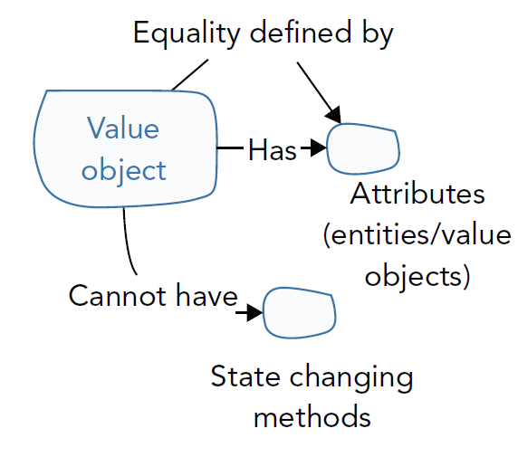-
Value objects represent the elements or concepts of your domain that are known only by their characteristics
- they are used as descriptors for elements in your model
- they do not require a unique identity
- they are defined by their attributes
-
Value objects are treated as immutable
- once created, they can never alter their state
-
Are often passed as parameters in messages between object
- they are temporarily created for an operation and then discarded
Entities
-
An entity represents a concept in the domain that is defined by its identity rather than its attributes
- its identity remains fixed throughout its lifecycle while its attributes may change
-
Entities are mutable as the attributes can change
- they can delegate work
- are also called “reference objects”
Domain Services
-
Domain services encapsulate domain logic and concepts that are not naturally modeled as value objects or entities in your model
-
Domain services have no identity or state
- their responsibility is to orchestrate business logic using entities and value objects
Code Example
// An example of a Value Object
class Price {
amountInEuroCents: number
inEuros(): number {
// implementation
}
// other logic
}
// An example of an Entity
class ShoppingCart {
id: ShoppingCartId;
items: Array<ShoppingCartItem>
addItem(item: ShoppingCartItem) {
// implementation
}
}
// For e-commerce, an example of a domain service would be the checkout step
function checkout(shoppingCart: ShoppingCart, ...) {
// do service stuff
}
Modules
-
The Modules in the domain layer should emerge as a meaningful part of the model
- … telling the story of the domain on a larger scale
-
There should be low coupling between Modules and high cohesion within them, both code-wise and concept-wise:
- low coupling: there is a limit to how many things a person can think about at once
- high cohesion: incoherent fragments of ideas are as hard to understand as an undifferentiated melt of ideas
Best Practices
- Give the Modules names that become part of the Ubiquitous Language: modules and their names should reflect insight into the domain
- When creating modules, favor conceptual clarity over technical convenience (if both are not achievable together)
Aggregates
-
Entities and value objects collaborate to form complex relationships that meet invariants within the domain model
- When dealing with large interconnected associations of objects, it is often difficult to ensure consistency and concurrency when performing actions against domain objects
-
The Aggregate pattern ensures consistency and defines transactional concurrency boundaries for object graphs
- Large models are split by invariants and grouped into aggregates of entities and value objects that are treated as a conceptual whole
- Relationships between aggregate roots should be implemented by keeping a reference to the ID of another aggregate root and not a reference to the object itself
Aggregates
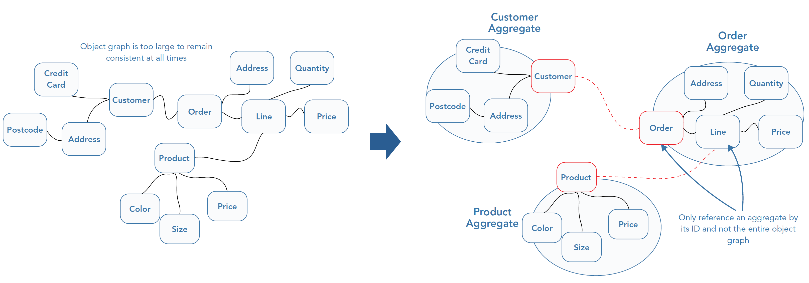Aggregate Root
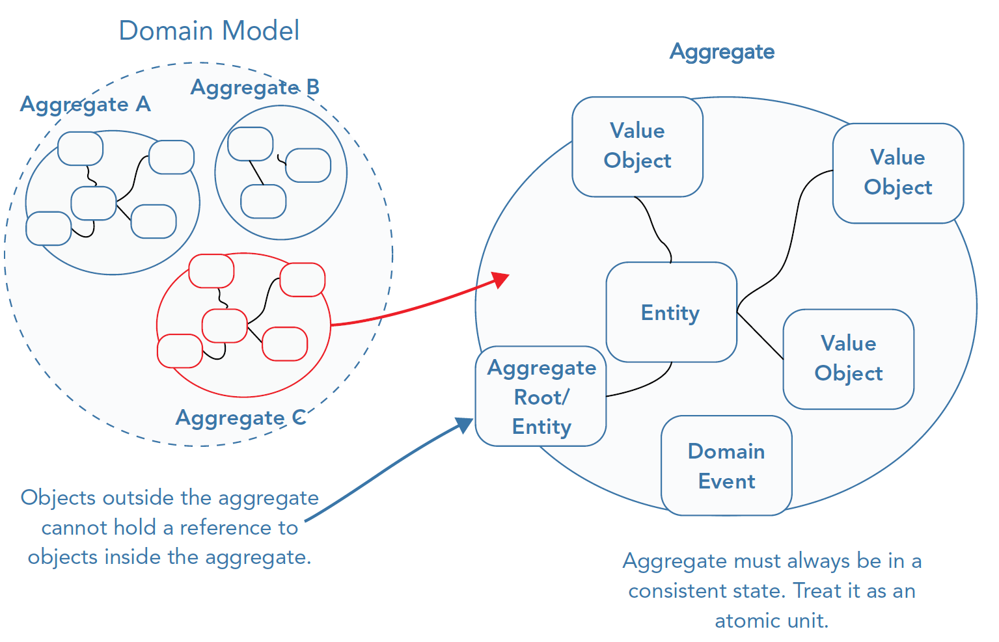-
An aggregate root acts as the entry point into the aggregate
- No other outside entity or value object can hold a reference to an object within the aggregate
-
Objects outside the aggregate can only reference the aggregate root of another aggregate
-
Any changes to objects in the aggregate need to come through the root
-
The root encapsulates the data of the aggregate and only exposes behaviors to change it
Factories
-
A factory ensures that all invariants are met before the domain object is created
- If the creation of an entity or a value object is complex, you should delegate the construction to a factory
- If a domain object is simple and has no special rules for valid construction, favor a constructor method over a factory object
-
Factories can be also used when re‐creating domain objects from persistent storage
Repositories
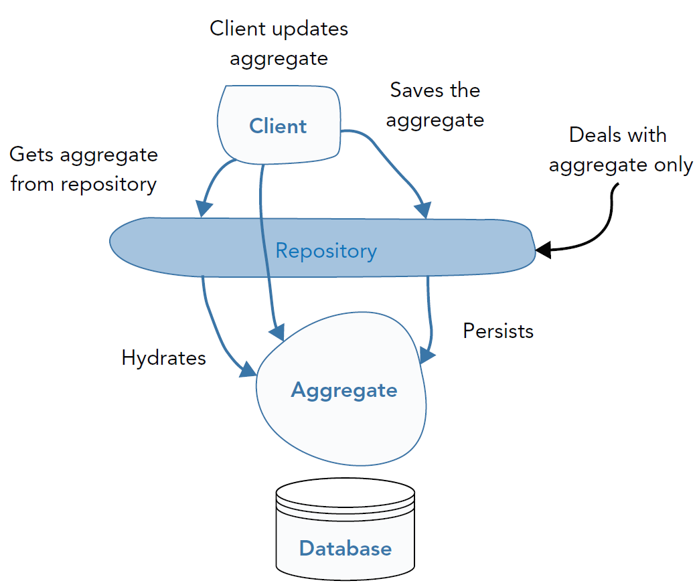-
A repository is a pattern that abstracts the underlying persistence store from the model allowing you to create a model without thinking about infrastructure concerns
-
Because an aggregate is an “atomic unit”, is not possible to persist changes to it without persisting the entire aggregate
- The repository is the mechanism that you should use to retrieve and persist aggregates
-
A repository is an infrastructure concern
- It is not always necessary to abstract away the underlying framework doing all the hard work
Domain Events
-
A domain event is something that has happened in the problem domain that the business cares about
-
Events can be used to record changes to a model, or as a form of communication across aggregates
-
Often an operation on a single aggregate root can result in side effects that are outside the aggregate root boundary
- In this case: other aggregates within the model can listen for events and act accordingly

Domain Events help to uncouple bounded context and to focus on the “when”
Event Sourcing
-
An alternative to traditional snapshot‐only persistence
-
Event Sourcing allows to store the series of events that lead up to the state
Summing up (1/2)
| Building Block | Salient Points |
|---|---|
| Entities | - Are defined by their identity - Identity remains constant throughout its lifetime - Are responsible for equality checks |
| Value Objects | - Describe the properties and characteristics within the problem domain - Have no identity - Are immutable |
| Domain Services | - Contain domain logic that can’t naturally be placed in an entity or value object - Have no internal state |
| Modules | - Are used to decompose, organize, and increase the readability of the domain model - Help to define clear boundaries between domain objects - They operate on a higher level of abstraction than aggregates and entities |
Summing up (2/2)
| Building Block | Salient Points |
|---|---|
| Aggregates | - Decompose large object graphs into small clusters of domain objects to reduce implementation complexity - Represent domain concepts, not just generic collections of domain objects - Are based around domain invariants |
| Factories | - Separate use from construction - Encapsulate complex entity and value object construction |
| Repositories | - Expose the interface of an in-memory collection of aggregate roots - Provide the retrieval and persistence needs of aggregate roots - Decouple the domain layer from database strategies and infrastructure code |
| Domain Events | - Makes domain events more explicit in code - They are part of the ubiquitous language (UL) |
| Event Sourcing | - Replaces traditional snapshot‐only storage with a full history of events that produce the current state |
Tactical Building Blocks
Details (Part 1)
Value Objects
Value Objects
Main distinguish features
-
have no identity
- used to describe domain‐relevant attributes of entities
- represent an entity’s state, describing something about the entity or the things it owns
-
are immutable and combinable
-
promote usability and expressiveness
-
Working with value objects can be challenging at times because there are a few considerations that require deeper thinking
- notably, persistence, validation, and primitive avoidance
-
Two key rationales make value objects an important technical construct in DDD
- Representing a Descriptive, Identity‐Less Concept
- Enhancing Explicitness
Representing a Descriptive, Identity‐Less Concept
When a concept lacks an apparent identity, it should be a value object in the domain model
public class BankAccount
{
public BankAccount(Guid id, Money startingBalance)
{
this.Id = id;
this.Balance = startingBalance;
}
public Guid Id { get; private set; }
public Money Balance { get; private set; }
}
// value object
public class Money
{
public Money(int amount, Currency currency)
{
this.Amount = amount;
this.Currency = currency;
}
private int Amount { get; set; }
private Currency Currency { get; set; }
}
Enhancing Explicitness
-
DDD is all about explicitly communicating important business rules and domain logic
- … but primitive types (integers, strings, …) in isolation aren’t great at this
-
Although it is possible to represent descriptive concepts with primitive types
- most DDD practitioners strongly discourage it
- primitives should be wrapped up into cohesive value objects that explicitly represent the concepts they are modeling
Enhancing Explicitness - Example (1/2)
public class WinningBid
{
public int Price { get; private set; }
}
-
Representing the amount of the
WinningBidas an integer is a sub‐optimal design choice!-
integer does not express what a price is in this domain
- it doesn’t restrict inputs to the allowed range of values
- it doesn’t express the unit of measurement or currency
- this is a massive source of ambiguity that hides important details of the domain
-
there is the risk that related domain concepts will be scattered throughout the domain rather than being cohesively co-located
- we can’t add behavior to primitive classes
-
Enhancing Explicitness - Example (2a/2)
- the
Pricevalue object shows that in the online auction domain, the rules for incrementing the winning bid for a price are significant
public class Price
{
public Price(Money amount)
{
if (amount == null)
throw new ArgumentNullException(
"Amount cannot be null");
Amount = amount;
}
public Money Amount { get; private set; }
public Money BidIncrement(){/* ... */}
public bool CanBeExceededBy(Money offer) {/* ... */}
}
public Money BidIncrement()
{
if (Amount.IsGreaterThanOrEqualTo(new Money(0.01m))
&& Amount.IsLessThanOrEqualTo(new Money(0.99m)))
return Amount.add(new Money(0.05m));
if (Amount.IsGreaterThanOrEqualTo(new Money(1.00m))
&& Amount.IsLessThanOrEqualTo(new Money(4.99m)))
return Amount.add(new Money(0.20m));
if (Amount.IsGreaterThanOrEqualTo(new Money(5.00m))
&& Amount.IsLessThanOrEqualTo(new Money(14.99m)))
return Amount.add(new Money(0.50m));
return Amount.add(new Money(1.00m));
}
public bool CanBeExceededBy(Money offer)
=> return offer.IsGreaterThanOrEqualTo(BidIncrement());
Enhancing Explicitness - Example (2b/2)
-
The benefit of the
Pricevalue object is to cohesively group all the related behaviors of a price- See
BidIncrement()andCanBeExceededBy() - The rules for incrementing a price and determining if a price can be exceeded by another price are the cohesive grouping of behaviors related to the price concept that should and do live together.
- See
-
This helps to express and enforce the rules of the price concept in this domain
- Whenever there is a discussion involving prices, developers and domain experts need only look at this one single class to understand what a price is and what rules apply to it
- Conversations with domain experts can be clearer and domain concepts will be more apparent to anyone reading the code
-
Value objects should often be fine‐grained
- The
Pricevalue object itself pushes the related concern of representing money into theMoneyvalue object, using an instance ofMoneyto represent the amount of the winning bid
- The
Value Objects Features (1/3)
-
Identity-less
- Value objects need the context of an entity to be relevant
-
Attribute‐Based Equality
- Value objects are considered equal if they have the same value
- This must require a good implementation of the
Equals()method (and related) in OOP- In Scala, case classes have built‐in support for attribute‐based equality
-
Behavior‐Rich
- As much as possible your value objects should expose expressive domain‐oriented behavior and encapsulate state
- As a general rule, all primitive values should be private or protected by default
Value Objects Features (2/3)
-
Cohesive
- As a descriptive concept, usually describing something with a quantity, value objects often cohesively encapsulate the value of measurement and the unit of measurement
-
Immutable
- Once created, a value object can never be changed
- Any attempts to change its values should result in the creation of an entirely new instance with the desired values
-
Combinable
- Values are often represented numerically, so in a lot of cases, they can be combined to create a new value
- When domain experts talk about combining two instances of a certain concept, this is a clear sign that you may need to model the concept as a value object
Value Objects Features (3/3)
-
Self‐Validating
- Value objects should never be in an invalid state
- They themselves are solely responsible for ensuring this requirement
- In an OOP scenario, at the creation of an instance of a value object, the constructor should throw an exception if the arguments are not in accordance with domain rules
- … or using (with caution) the factory pattern!
- Code Contracts
- trade-off between additional technical complexity and greater expressiveness and fluency
- Value objects should never be in an invalid state
-
Testable
- Immutability, cohesion, and combinability are three qualities of value objects that make them easy to test in an expressive domain‐oriented language
- Immutability precludes the need to use mocks or verify side effects
- Cohesion allows single concepts to be fully tested in isolation
- Combinability allows you to express the relationships between different values
- Immutability, cohesion, and combinability are three qualities of value objects that make them easy to test in an expressive domain‐oriented language
Common Modeling Patterns
-
DDD practitioners have built up a small collection of patterns over the years that improve the experience of working with value objects
-
Mostly, the benefits are aimed at improving expressiveness and clarity
- but some have other slight benefits, including maintainability
-
In particular:
- Static Factory Methods
- Micro Types (Tiny Types)
- Collection Aversion
Static Factory Methods
-
Using static factory methods is a popular technique for wrapping the complexities of object construction behind a simpler, more expressive interface
-
Claims:
- Static Factory Methods can be more expressive and can hide complexity
- Static Factory Methods can be more maintainable and expressive
public class Height
{
public Height(int size, MeasurmentUnit unit)
{
this.Size = size;
this.Unit = unit;
}
public int Size { get; private set; }
public MeasurmentUnit Unit { get; private set; }
public static Height FromFeet(int feet)
=> new Height(feet, MeasurmentUnit.Feet);
public static Height FromMetres(int metres)
=> new Height(metres, MeasurmentUnit.Metres);
}
var sixDays = TimeSpan.FromDays(6);
var threeHours = TimeSpan.FromHours(3);
var twoMillis = TimeSpan.FromMilliseconds(2);
//vs.
var sixDays = new TimeSpan(6, 0, 0, 0, 0);
var threeHours = new TimeSpan(0, 3, 0, 0, 0);
var twoMillis = new TimeSpan(0, 0, 0, 0, 2);
Micro types (Tiny Types)
-
Micro types takes the “principle” of avoiding the use of primitives even further
- by wrapping already‐expressive types with even more expressive types
- the types being wrapped do not have to be primitives
-
Micro types are useful because add contextual clarity that reduce errors
- the type system work, increasing the code explicitness and preventing human error
-
It is a divisive approach…
public class OvertimeCalculator
{
public OvertimeHours Calculate(HoursWorked worked,
ContractedHours contracted)
=> new OvertimeHours(worked.Hours - contracted.Hours);
}
public class Hours : ValueObject<Hours>
{
public readonly int Amount;
public Hours(int amount)
{
this.Amount = amount;
}
}
public class HoursWorked : ValueObject<HoursWorked>
{
public readonly Hours Hours;
public HoursWorked(Hours hours)
{
this.Hours = hours;
}
}
//ContractedHours and OvertimeHours are similar...
Collection Aversion (1/2)
-
You should never have a collection of value objects
- primitive collections do not properly express domain concepts
-
Having a collection of value objects often means that you need to pick out specific items using some form of identity,
- is clearly a violation of value objects having no identity…
Collection Aversion (2/2)
public class Customer
{
public Customer(Guid id)
{
this.Id = id;
}
public Guid Id { get; private set; }
public IEnumerable<PhoneNumber> PhoneNumbers { get; set; }
}
public class PhoneNumber : ValueObject<PhoneNumber>
{
public readonly string Number;
public PhoneNumber(string number)
{
this.Number = number;
}
}
public class Customer
{
public Customer(Guid id)
{
this.Id = id;
}
public Guid Id { get; private set; }
public PhoneBook PhoneNumbers { get; set; }
}
public class PhoneBook : ValueObject<PhoneBook>
{
public readonly PhoneNumber HomeNumber;
public readonly PhoneNumber MobileNumber;
public readonly PhoneNumber WorkNumber;
public PhoneBook(PhoneNumber homeNum,
PhoneNumber mobileNum,
PhoneNumber workNum)
{
this.HomeNumber = homeNum;
this.MobileNumber = mobileNum;
this.WorkNumber = workNum;
}
}
Entities
Entities
-
Some domain concepts have an inherent identity in the problem domain
- These concepts must be designed as entities
- Unlike value objects, it is usually not acceptable for two entities that have similar values to be considered equal
-
Finding entities in your domain and modeling them explicitly is important for conceptual and technical reasons
- Identifing a concept as an entity, enable to probe domain experts for related details (e.g. its life cycle)
-
Technically, is also important to understand which concepts are entities
- Distinct trade‐offs and considerations apply to their design and implementation
Domain Concepts with Identity…
- A good opportunity to find entities in the domain you are modeling is to pay attention to how domain experts speak
Imagine you are in discussions with a holiday and travel domain expert. He/her may explain to you that travelers choose a hotel they like and then book a holiday there. The domain expert also informs you that it is not acceptable for the traveler to be given a booking at a different hotel, even if it has the same name or has other values that are the same.
- In this situation, the domain expert is implicitly telling you that hotels are an entity
- their identity and uniqueness are important: without them, it would not be possible to distinguish one hotel from other hotels…
- Another piece of information to try to extract from domain experts is the type of identity an entity has
- identity can be an important domain concept in itself and can be explicitly modeled to improve the expressiveness of your domain model
A hotel has a real‐world ID that enables many disparate travel agents and applications to share data about it, like availability and user reviews.
vs.
A hotel have no real-world unique identifier, so the application would need to generate an arbitrary one.
- If it’s not clear, then it’s in your best interests to ask the domain experts if an entity has a unique identity in the problem domain
… and Continuity
-
Aside from identity, but closely related, continuity is another sign that you have an entity
-
Domain experts may give clues like:
- “The order is accepted”
- “The order is confirmed after payment”
- “The order is fulfilled by the courier”
-
These clues indicate that the domain concept has a lifecycle in the problem domain
- Usually, having a life cycle in the domain means that an identity is needed to allow the concept to be found and updated at various stages of its lifecycle
Pushing Behavior into Value Objects
-
Keeping entities focused on the responsibility of identity is important because it prevents them from becoming “bloated”
- An easy trap to fall into when they pull together many related behaviors
-
Consider the following “bloated” entity as an example
public class HolidayBooking
{
public HolidayBooking(int travelerId,
DateTime firstNight, DateTime lastNight,
DateTime booked)
{
this.TravelerId = travelerId;
this.FirstNight = firstNight;
this.LastNight = lastNight;
this.Booked = booked;
this.Id = GenerateId(travelerId, firstNight,
lastNight, booked);
}
public string Id { get; private set; }
public int TravelerId { get; private set; }
public DateTime FirstNight { get; private set; }
public DateTime LastNight { get; private set; }
public DateTime Booked { get; private set; }
private string GenerateId(int travelerId,
DateTime firstNight, DateTime lastNight,
DateTime booked)
=> string.Format("{0}-{1}-{2}-{3}",
travelerId,
firstNight.ToString("yyyy/MM/dd"),
lastNight.ToString("yyyy/MM/dd"),
booked.ToString("yyyy/MM/dd"));
}
Example Refactoring
public class HolidayBooking
{
public HolidayBooking(int travelerId, Stay stay, DateTime booked)
{
this.TravelerId = travelerId;
this.Stay = stay;
this.Booked = booked;
this.Id = GenerateId(travelerId, stay.FirstNight, stay.LastNight, booked );
}
// Properties definition...
private string GenerateId(int travelerId, DateTime firstNight, DateTime lastNight, DateTime booked) => //...
}
public class Stay
{
public Stay(DateTime firstNight, DateTime lastNight)
{
if (firstNight > lastNight) throw new FirstNightOfStayCannotBeAfterLastNight();
if (DoesNotMeetMinimumStayDuration(firstNight, LastNight)) throw new StayDoesNotMeetMinimumDuration();
this.FirstNight = firstNight;
this.LastNight = lastNight;
}
private bool DoesNotMeetMinimumStayDuration(DateTime firstNight, DateTime lastNight)
=> (lastNight - firstNight) < TimeSpan.FromDays(3);
}
Focusing on Behavior, Not Data
-
Entities should be behavior-oriented
- An entity’s interface should expose expressive methods that communicate domain behaviors instead of exposing state
-
Focusing on an entity’s behavior when using DDD is important because it makes your domain model more expressive
Entity Validation
-
A primary implementation requirement for entities is ensuring they are self-validating and always (contextually) valid
-
The following example exposes an entity (
FlightBooking) with both Constructor validation and Context-Dependent validation
public class FlightBooking
{
private bool confirmed = false;
public FlightBooking(Guid id, DateTime departureDate, Guid customerId)
{
if (id == null)
throw new IdMissing();
if (departureDate == null)
throw new DepartureDateMissing();
if (customerId == null)
throw new CustomerIdMissing();
this.Id = id;
this.DepartureDate = departureDate;
this.CustomerId = customerId;
}
public Guid Id { get; private set; }
public DateTime DepartureDate { get; private set; }
public Guid CustomerId { get; private set; }
public void Reschedule(DateTime newDeparture)
{
if (confirmed)
throw new RescheduleRejected();
this.DepartureDate = newDeparture;
}
public void Confirm()
{
this.confirmed = true;
}
}
Entity Invariants
-
Invariants are a fundamental form of validation
-
Invariants are facts about an entity
- They mandate that the values of certain attributes must fall within a certain range to be an accurate representation of the entity being modeled
public class Hotel
{
public Hotel(Guid id, HotelAvailability initialAvailability,
HotelRoomSummary rooms)
{
EnforceInvariants(rooms);
// internal fields initialisation...
}
private void EnforceInvariants(HotelRoomSummary rooms)
{
if (rooms.NumberOfSingleRooms < 1 && rooms.NumberOfDoubleRooms < 1 &&
rooms.NumberOfFamilyRooms < 1) throw new HotelsMustHaveRooms();
}
}
Note that, by definition, invariants always applies regardless of context
Implementing Validation and Invariants with Specifications
-
Specifications are small, single‐purpose classes, similar to policies
-
The benefits of using specifications for validation and invariants include
- enhanced expressiveness through encapsulating a single concept in its own class
- increased testability of immutable, side‐effect‐free logic
-
Using specifications is also an example of pushing behavior out of entities and into other types of objects
-
Consider to compose fluently several specifications…
public class FlightBooking
{
private NoDepartureReschedulingAfterBookingConfirmation spec =
new NoDepartureReschedulingAfterBookingConfirmation();
public void Reschedule(DateTime newDeparture)
{
if (!spec.IsSatisfiedBy(this))
throw new RescheduleRejected();
this.DepartureDate = newDeparture;
}
}
public interface ISpecification<T>
{
bool IsSatisfiedBy(T Entity);
}
public class NoDepartureReschedulingAfterBookingConfirmation
: ISpecification<FlightBooking>
{
public bool IsSatisfiedBy(FlightBooking booking)
=> !booking.Confirmed;
}
Avoid the State Pattern (1/3)
-
Many domains have entities that naturally exhibit different life cycle stages or states
- In each state, usually only a subset of the entity’s behavior is applicable
-
Because of its life cycle, there is sometimes a temptation to model entities using the state pattern
- DDD strongly discourage liberal use of the state pattern for entities
- The alternative is to just have explicit classes for each state
-
Relevant to DDD is the fact that the state pattern is less explicit
- By allowing methods that should not be called, the state pattern does not explicitly model the rules of the domain
Avoid the State Pattern (2/3)
Example with the State Pattern
public class OnlineTakeawayOrder
{
private IOnlineTakeawayOrderState state;
public OnlineTakeawayOrder(Guid id, Address address)
{
this.state = new InKitchenQueue(this);
}
public void Cook() { state = state.Cook(); }
public void TakeOutOfOven() { state = state.TakeOutOfOven(); }
public void Package() { state = state.Package(); }
public void Deliver() { state = state.Deliver(); }
}
public interface IOnlineTakeawayOrderState
{
IOnlineTakeawayOrderState Cook();
IOnlineTakeawayOrderState TakeOutOfOven();
IOnlineTakeawayOrderState Package();
IOnlineTakeawayOrderState Deliver();
}
public class InKitchenQueue : IOnlineTakeawayOrderState
{
private OnlineTakeawayOrder order;
public InKitchenQueue(OnlineTakeawayOrder order)
{ this.order = order; }
public IOnlineTakeawayOrderState Cook()
=> new InOven(order);
public IOnlineTakeawayOrderState TakeOutOfOven()
=> throw new ActionNotPermittedInThisState();
//analogously for other unapplicable states...
}
Avoid the State Pattern (3/3)
Example without the State Pattern
public class InKitchenOnlineTakeawayOrder
{
public InKitchenOnlineTakeawayOrder(Guid id, Address address) { /* ... */ }
public InOvenOnlineTakeawayOrder Cook()
=> new InOvenOnlineTakeawayOrder(this.Id, this.Address);
}
public class InOvenOnlineTakeawayOrder
{
public InOvenOnlineTakeawayOrder(Guid id, Address address) { /* ... */ }
public CookedOnlineTakeawayOrder TakeOutOfOven()
=> new CookedOnlineTakeawayOrder(this.Id, this.Address);
}
- The real benefit is that the rules of the domain are now much clearer in the code
- no longer is there a single
OnlineTakeawayOrderentity that is passed around the domain model allowing invalid methods to be called on it - the domain model must explicitly specify which state it needs to operate on, resulting in more expressive domain rules that the type system enforces
- no longer is there a single
Avoiding Getters/Setters with the Memento Pattern
-
DDD enforce to avoid as much as possible the getter/setter exposition
- in order to create behaviour-rich domain models
-
A common problem: getting data out of the domain models!
- e.g., to expose on an UI the data hidden inside an entity
public class Basket
{
private int Id {get;set}
private int Cost {get; set;}
private List<Item> Items {get; set;}
public void Add(Item item) { }
public BasketSnapshot GetSnapshot()
=> new BasketSnapshot(this.Id,
this.Cost, this.Items.Count(), ...)
}
-
The memento pattern gives an option to deal with this problem.
- This pattern requires to create a snapshot of the entity’s state
- The snapshot is bundled out the backdoor of the entity, allowing to harness its data in other parts of the application
-
Mementos represent a stable interface that other parts of the application can become coupled to
- while the internal details of the entity can still be refactored if required
Favor Hidden‐Side‐Effect‐Free Functions
- Side effects can make code harder to reason about and harder to test, and they can often be the source of bugs
- Avoiding side-effecting functions as much as possible is generally considered good advice…
- … and avoiding hidden side effects is a fundamental expectation!
(hidden side effect)
public class Dice
{
private Random r = new Random();
public Dice(Guid id) { }
public int Value() => r.Next(1, 7);
}
(expected side effect)
public class Dice
{
private Random r = new Random();
public Dice(Guid id) { }
public int Value { get; private set; }
public void Roll()
{
Value = r.Next(1, 7);
}
}
Domain Services
Domain Services
-
When building domain models, sometimes there are concepts that do not logically sit comfortably within an entity or aggregate in the system
- This is an implicit sign that you may need to create a domain service
-
Domain services are easily distinguished based on two defining characteristics
- they represent domain concepts
- they are stateless
-
Domain services are used to orchestrate entities and encapsulate business policies
- NOTE: Domain Services must be not confused with “application services” functionalities…
-
When to use:
- Encapsulating business policies and processes
- Representing Contracts
Encapsulating Business Policies and Processes
- A primary concern for domain services is carrying out some behavior involving entities or value objects
- Consider the following example
public class Competitor
{
public Guid Id {get; protected set;}
public string GamerTag { get; protected set; }
public Score Score { get; set; }
public Ranking WorldRanking { get; set; }
}
public class OnlineMatch : IGame
{
private Competitor player1;
private Competitor player2;
public OnlineMatch(Competitor player1,
Competitor player2, Guid id) { /* ... */ }
public void OnMatchCompleted(Competitor winner,
Competitor loser)
{
UpdateScoresAndRewards(winner, loser);
}
private void UpdateScoresAndRewards(Competitor winner,
Competitor loser)
{
winner.Score = winner.Score.Add(new Score(200));
loser.Score = loser.Score.Subtract(new Score(200));
}
}
- The issue here is about the behaviour for calculating new players score that should be delegated outside the entity
- the business may want to award double points or hand out special prizes at certain times.
- score and reward calculation are important concepts themselves
Example Refactoring
public interface IGamingScorePolicy
{
void Apply(IGame game);
}
public interface IGamingRewardPolicy
{
void Apply(IGame game);
}
public class OnlineMatch : IGame
{
private Competitor player1;
private Competitor player2;
private IEnumerable<IGamingScorePolicy> scorers;
private IEnumerable<IGamingRewardPolicy> rewarders;
/* ... */
public void OnMatchCompleted(Competitor winner,
Competitor loser)
{
this.Winners.Add(playwinnerer1);
this.Losers.Add(loser);
UpdateScoresAndRewards();
}
private void UpdateScoresAndRewards()
{
foreach (var scorer in scorers)
{
scorer.Apply(this);
}
foreach (var rewarder in rewarders)
{
rewarder.Apply(this);
}
}
}
public class Free12MonthSubscriptionForHighScoresReward
: IGamingRewardPolicy
{
private IScoreFinder repository;
public Free12MonthSubscriptionForHighScoresReward
(IScoreFinder repository) { /* ... */ }
public void Apply(IGame game)
{
var top100 = repository.FindTopScore(game, 100);
if (game.Winners.Single().Score > top100)
{ /* trigger reward process */ }
}
}
Representing Contracts
- The other broad use case for domain services is as a contract
- When the concept itself is important to the domain…
- … but the implementation relies on infrastructure that cannot be used in the domain model!
// - implementation of domain service
// - this would live in the service layer
public class ShippingRouteFinder : IShippingRouteFinder
{
public Route FindFastestRoute(Location departing,
Location destination, DateTime departureDate)
=> ParseRoute(
QueryRoutingApi(departing, destination,
departureDate));
}
// - interface for domain service
// - this would live in the domain model
// (the concept is part of the UL)
// - this is the "contract"
public interface IShippingRouteFinder
{
Route FindFastestRoute(Location departing,
Location destination, DateTime departureDate);
}
Anatomy of a Domain Service
public class RomanceOMeter
{
//Stateless
public CompatibilityRating AssessCompatibility(
LoveSeeker seeker1, LoveSeeker seeker2)
{
var rating = new CompatibilityRating(0);
//Orchestrate entities
if (seeker1.BloodType == seeker2.BloodType)
rating += new CompatibilityRating(250);
//return another domain object
return rating;
}
}
-
Domain services have three fundamental technical features:
- they represent behavior and thus have no identity;
- they are stateless;
- they often orchestrate multiple entities or domain objects
-
In DDD, must to be careful not to push too much logic into domain services
- this can lead to inaccurate, confusing, and anemic domain models with low conceptual cohesion
Domain Services vs. Application Services
Domain services
- represent concepts that exist within the problem domain,
- or, at a minimum, their interface lives in the domain model
Application services
- do not represent domain concepts
- do not contain business rules
- They both may have to deal with infrastructural concerns, but:
- Domain services use infrastructure to inform/manage/update the domain logic
- Application services defines architectural elements to let the domain model to execute correctly
Domain Services and Entities
- Sometimes an entity needs a domain service to carry out its behavior in a way that precludes merging them together in an application service
- A typical example: a notification needs to occur following an entity executing some task
// Entity
public class RestaurantBooking
{
public Guid Id { get; protected set; }
public Restaurant Restaurant { get; protected set; }
public Customer Customer { get; protected set; }
public BookingDetails BookingDetails { get; protected set;}
public bool Confirmed { get; protected set; }
public void ConfirmBooking() // The Entity behavior that depends on a domain service
{
// restaurantNotifier is the domain service
restaurantNotifier.NotifyBookingConfirmation(this);
}
}
- The problem here is to have the
restaurantNotifier, an instance ofRestaurantNotifier, available within the scope ofConfirmBooking()- Entity constructor injection seems to be the obvious choice…
- … but, what if you can’t construct the entity? (e.g. in the case of ORM-like mechanisms)
Option #1 - Constructor Injection
- If an entity or other domain object depends on a domain service, you can pass the relevant service into the constructor if you are managing object construction yourself
public static class RestaurantBookingFactory
{
public RestaurantBooking CreateBooking(Restaurant restaurant, Customer customer, BookingDetails details)
=> new RestaurantBooking(restaurant, customer, details, Guid.NewGuid(), new RestaurantNotifier());
}
- This solution becomes problematic in DDD when you don’t handle construction of the entity yourself
- Typically when an ORM loads an entity from persistence
Option #2 - Two-Phase Construction
- The factory methods can add a second stage of object construction that sets the domain service as a property on the entity after an ORM has constructed it
- E.g., you can have an
Init()method that takes all the dependencies and sets them, like a pseudo‐constructor
- E.g., you can have an
public class RestaurantBookingRepository
{
private ISession session; // interface provided by ORM
public RestaurantBookingRepository(ISession session) { this.session = session; }
public RestaurantBooking Get(Guid restaurantBookingId)
{
// first phase of construction handled by ORM
var booking = session.Load<RestaurantBooking>(restaurantBookingId);
// second phase of construction handled manually
booking.Init(new RestaurantNotifier()); // alternatively: booking.Notifier = new RestaurantNotifier();
return booking;
}
}
- Problems:
- forgetting that construction of the object occurs in two phases (inconsistent states…)
- apply the pattern consistently:
Init()must not be called again after object construction
Option #3 - Inversion of Control with Service Locator
Inversion of Control (IoC): the entity proactively requires the service
public class RestaurantBooking
{
private IRestaurantNotifier restaurantNotifier = ServiceLocator.Get<IRestaurantNotifier>();
public Guid Id { get; protected set; }
public Restaurant Restaurant { get; protected set; }
public Customer Customer { get; protected set; }
public void ConfirmBooking()
{
restaurantNotifier.NotifyBookingConfirmation(this);
}
}
-
By taking the hard‐coded dependency on the ServiceLocator class you can load all of an entity’s dependencies during object construction after an ORM has initialized it
- This removes the need for manual construction steps
-
There’s a price:
- now the entity is tightly coupled to the ServiceLocator
- an infrastructural concern that ideally you don’t want polluting the domain model
Option #4 - Applying Double Dispatch
- Domain services no longer need to be supplied into an entity’s constructor: they can be passed into methods on an entity by an application service
public class RestaurantBooking
{
public Guid Id { get; protected set; }
public Restaurant Restaurant { get; protected set; }
public Customer Customer { get; protected set; }
public void ConfirmBooking(IRestaurantNotifier restaurantNotifier)
{
restaurantNotifier.NotifyBookingConfirmation(this);
}
}
- This approach hasn’t proven to be massively popular:
- passing dependencies into methods requires callers of the method to supply the dependency
- this is a responsibility that shouldn’t belong to them
- dependencies normally go via the constructor because they should not be part of a method’s signature
- they are an implementation detail that may be changed, whereas the method signature should not be so volatile
- passing dependencies into methods requires callers of the method to supply the dependency
Option #5 - Decoupling with Domain Events
- A pattern that completely avoids injecting domain services into entities
- When important actions occur, an entity can raise a domain event that is handled by subscribers who are registered for that event
public class RestaurantBooking
{
public Guid Id { get; protected set; }
public void ConfirmBooking()
{
DomainEvents.Raise(
new BookingConfirmedByCustomer(this));
}
}
// The portion of code to register
// an Event Handler with a Domain Event
DomainEvents.Register<BookingConfirmedByCustomer>(
new NotifyRestaurantOnBookingConfirmation(
new RestaurantNotifer()));
// domain event handler
public class NotifyRestaurantOnBookingConfirmation
: IHandleEvents<BookingConfirmedByCustomer>
{
private IRestaurantNotifier restaurantNotifier;
public NotifyRestaurantOnCustomerBookingConfirmation(
IRestaurantNotifier restaurantNotifier)
{
this.restaurantNotifier = restaurantNotifier;
}
public void Handle(BookingConfirmedByCustomer confirmation)
{
var booking = confirmation.RestaurantBooking;
restaurantNotifier.NotifyBookingConfirmation(booking);
}
}
- One obvious drawback:
- The logic is now distributed between the
RestaurantBookingentity and theNotifyRestaurantOnCustomerBookingConfirmationevent handler, whereas with other patterns this would be a single piece of code
- The logic is now distributed between the
Domain Events
Domain Events
-
In the Domain‐Driven Design (DDD) several problem domains can be better understood considering events that occur within them (not just the entities)
- These events, known as domain events, will be uncovered during knowledge‐crunching sessions with domain experts
-
If conceptual models are event‐centric, then the code also needs to be event‐centric
-
The domain events design pattern is generally used as a single‐threaded pattern inside a domain model within a bounded context.
- It is not related to the issue about the bounded contexts integration
Important Domain Occurrences That Have Already Happened
- Events are just immutable classes with public properties (data objects) representing important events in the problem domain.
- In response to events, event handlers are executed
public class DeliveryGuaranteeFailed
{
public DeliveryGuaranteeFailed(OrderForDelivery order)
{
Order = order;
}
public OrderForDelivery Order { get; private set; }
}
public void Confirm(DateTime timeThatPizzaWasDelivered, Guid orderId)
{
DomainEvents.Register<DeliveryGuaranteeFailed>(onDeliveryFailure))
var order = orderRepository.FindBy(orderId);
order.ConfirmReceipt(timeThatPizzaWasDelivered);
}
private void onDeliveryFailure(DeliveryGuaranteeFailed evnt)
{
// handle domain event
}
Internal vs. External Events
-
Internal events are limited in scope to a single bounded context
- It is ok to put domain objects on them
- This poses no risk, because other bounded contexts cannot become coupled to these domain objects
-
External events can be shared among different bounded contexts
- They tend to be flat in structure, exposing just a few properties (most of the time just correlational IDs)
EVENT HANDLING ACTIONS
Invoke Domain Logic
-
Event handlers that exist within the domain model can handle events that occur there
- These scenarios are modeling sequences of interaction that occur in the problem domain
-
It’s common to see domain event handlers delegating to a domain service
Invoke Application Logic
-
There is a benefit to having event handlers that live in the application service layer in addition to those that live in the domain
- These event handlers tend to carry out infrastructural tasks
- These handlers are not part of UL or the domain
-
One important responsibility of application service layer handlers is that they trigger communication with external bounded contexts
- They also manage communication with external services
Aggregates
Aggregates
-
A domain model’s structure is composed of entities and value objects that represent concepts in the problem domain
- Associations that do not support behavior and exist only to better reflect reality add unnecessary complexity to a domain model
-
Designing relationships between domain objects is equally as important as designing the domain objects themselves
-
An aggregate is a consistency boundary that decomposes large models into smaller clusters of domain objects that are technically easier to manage
- Aggregates are an extremely important pattern at your disposal when designing a domain model
- They help you manage technical complexity
- They add a higher level of abstraction that can simplify talking and reasoning about the domain model
MANAGING COMPLEX OBJECT GRAPHS
-
Avoiding complex object graphs doesn’t have to be difficult
- You can easily reduce the number of associations between entities and value objects by only allowing relationships in a single direction
-
To decrease the number of relationships, you have to justify their inclusion
- If the relationship is not required (does not work to fulfill an invariant), don’t implement it!
- A relationship may exist in the problem domain, but it may not provide a benefit by existing in the code
-
Modeling domain object associations based on the needs of use cases and not real life can ensure a simpler domain model and a more performant system
- Associations between domain objects are there to support invariants
- Simplify associations in object graphs
- Model relationships from the point of view of a single traversal direction
- Simplify the model, and you will make it easier to implement and maintain in code
Favoring a Single Traversal Direction
-
A model that is built to reflect reality will contain many bidirectional object relationships
- Two objects contain a reference to each other
- By selecting a uni‐directional relationship between the entities the domain model is simpler
-
When defining object relationships, it is good practice to ensure that you explicitly ask:
- What is the behavior that an association is fulfilling?
- Who needs the relationship to function?
public class Supplier
{
public IList<PurchaseOrder> PurchaseOrders
{ get; private set; }
public IList<Product> Products
{ get; private set; }
}
public class PurchaseOrder
{
public Supplier Supplier
{get; private set;}
public IList <Product> Products
{get; private set;}
}
public class Product
{
public IList<Supplier> Suppliers
{get; private set;}
public IList<PurchaseOrder> PurchaseOrders
{get; private set;}
}
Qualifying Associations
- If you are implementing associations as object references to support domain invariants and those associations are one‐ or many‐to‐many, you should qualify the associations to reduce the number of objects that need to be hydrated
- In general: the greater the number of items in an associated collection (cardinality) the more complex the technical implementation will become
- Aim for lower cardinality by adding constraints to collections
IDs vs. Object References
-
Relationships between domain objects should exist only for behavioral needs
- Relationships that do not support behaviors can increase complexity in the implementation of the domain model
-
Object references are the classic example of adding unnecessary, complexity‐increasing relationships to a domain model
- E.g., Even if in the real life a customer has many orders, in the solution space there may be no invariant that requires a Customer to hold a collection of all Orders belonging to that customer
Aggregates are the most powerful of all tactical patterns
but they are one of the most difficult to get right
- There are many guidelines and principles you can lean on to help with the construction of effective aggregates
- but often developers focus only on the implementation of these rules…
- … and miss the true purpose and use of an aggregate…
- … which is to act as a consistency boundary!
#1 - Design around Domain Invariants
- Domain invariants are statements or rules that must always be adhered to
- If domain invariants are ever broken, you have failed to accurately model your domain
A basic example of an invariant for aggregates
Winning auction bids must always be placed before the auction ends. If a winning bid is placed after an auction ends, the domain is in an invalid state because an invariant has been broken and the domain model has failed to correctly apply domain rules.
- Using invariants as a design strategy for aggregates makes sense because invariants often involve multiple domain objects
- When all domain objects involved in an invariant reside within the same aggregate, it is easier to compare and coordinate them to ensure that their collective states do not violate a domain invariant
#2 - Higher Level of Domain Abstraction
-
By grouping related domain objects, you can refer to them collectively as a single concept
-
Aggregates afford these benefits of abstraction to your domain model by allowing you to refer to a collection of domain objects as a single concept
#3 - Consistency Boundaries
-
To ensure a system is usable and reliable, there is a strong need to make good choices about which data should be consistent and where transactional boundaries should lie
-
When applying DDD, these choices arise from grouping objects that are involved in the same business use case(s)
- In other words, aggregates…
-
Two alternatives:
- Transactional Consistency internally
- Eventual Consistency Externally
#3A - Transactional Consistency Internally (1/4)
- Considers the option to have a single aggregate by wrapping the entire domain model in a single transactional boundary
- The problem with this is that in a collaborative domain when many changes are being performed there is the potential for a conflict for changes that are completely unrelated
- The problem would likely manifest as blocking issues at the database level or failed updates (due to pessimistic concurrency)
- User A wants to add an address to a customer record, whereas user B wants to change the state of the same customer’s order.
- There are no invariants that state while an order is being updated the personal details of a customer cannot change
- but in this scenario if both updates are made at the same time, one of the user’s changes will be blocked/rejected
#3A - Transactional Consistency Internally (2/4)
- You might be tempted to assume that having no transactional boundaries would solve all the problems
- That would be dangerous because then consistency problems can arise that cause domain‐invariant violations
- Two different users are updating the same order
- one is applying a discount code to the order, while another is modifying an order line
- Because there is no concurrency check and the change is not transactional, both changes will be made, resulting in a broken invariant
- In this case, the order could have a massive discount applied that is no longer applicable
#3A - Transactional Consistency Internally (3/4)
-
An aggregate treats the cluster of domain objects as a conceptual whole
- e.g. The order items do not exist or make sense outside the concept of an order
-
The aggregate defines the boundary of the cluster of domain objects and separates it in terms of consistency and transactional mechanism from all other domain objects outside it
- Customer and order are treated as two independent aggregates because there are no invariants in the domain that involve both of them
#3A - Transactional Consistency Internally (4/4)
-
To enforce consistency in the cluster of domain objects, all interaction needs to go through a single entity known as the aggregate root
-
Objects outside of the aggregates can have no access to any of the internal objects of the aggregate
- this ensures control of the domain objects and ensures consistency within the aggregate
Aggregates persistency
- The aggregate as a whole is pulled from and committed to the datastore via a repository
- No parts of the aggregates can be separately pulled from the data store unless it is purely for reporting
#3B - Eventual Consistency Externally (1/2)
- Because aggregates are persisted and retrieved atomically, a rule that spans two or more aggregates will not be immediately consistent
- The aggregate ensures transactional consistency internally but it is not responsible for updating anything outside its consistency boundary
#3B - Eventual Consistency Externally (2/2)
Example - Consider a loyalty policy: ff a customer has spent more than $100 in the past year, he/she gets 10% off all further purchases
- In the domain model, there are separate order and loyalty aggregates
- When an order is placed, the Order aggregate is updated inside a transaction exclusively
- At that point, the Loyalty aggregate does not have a consistent view of the customer’s purchase history because it was not updated in the same transaction
- The Order aggregate can publish an event signalling the order was created, which the Loyalty aggregate can subscribe to…
A general rule
Favor Smaller Aggregates
-
Smaller aggregates make a system faster and more reliable, because less data is being transferred and fewer opportunities for concurrency conflicts arise
-
Conversely, large aggregates:
- can degrade performance
- are more susceptible to concurrency issues
- may not scale well
Online Auction Case Study
Bounded Contexts
- The Listing bounded context deals with the items for sale and the format that they are being sold in, whether that is an auction or a fixed price
- The Disputes bounded context covers any disputes raised between a seller and member over a listing
- The Membership bounded context covers membership to the eBidder site
- The Selling Account bounded context looks after fees and selling activities
In this example we will consider the Listing bounded context only
Online Auction Case Study
The domain model for the Listing bounded context
Defining Aggregates Boundaries
Rule 1 - Aligning with Invariants
Some of the domain rules that can form the basis of deciding which clusters of objects should be aggregates in the Listing bounded context
- Each listing must be in at least one category and offer at least one payment type and one shipping method
- A listing is sold via an auction
- an auction has a start and end date and keeps track of the winning bid
- When a member places a bid, he can enter the maximum amount that he would be happy to pay for the item
- only the amount required to become the winning bidder is bid
- if a second member bids, the auction automatically bids up to the maximum amount
- each automatic bid is logged as a bid
- A member can ask questions about a listing
- a seller can then provide an answer that closes the question
- An auction can generate many bids, but the current price is defined by the winning bid
- Members can watch items
Defining Aggregates Boundaries
Rule 1 - Aligning with Invariants
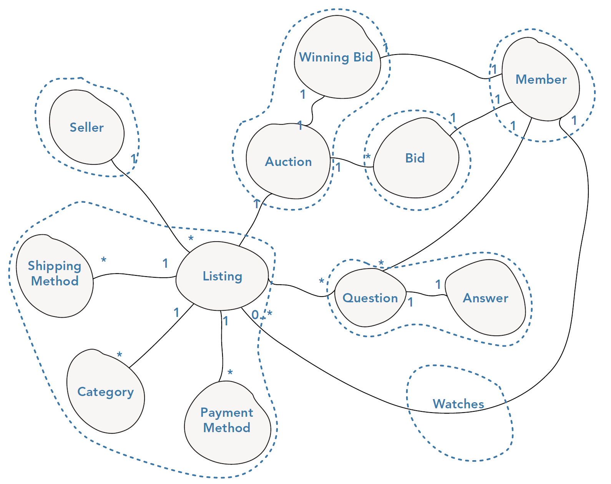Defining Aggregates Boundaries
Rule 1 - Aligning with Invariants
Considerations (1/2)
-
Questions and Answers aggregate - There are no invariants that requires data from both questions and listings apart from a reference that can be implemented via an ID property. A listing as a concept can exist without a question, and a question does not depend on any other domain objects apart from an answer.
-
Auction and Winning Bid aggregate - An auction represents the format of the listing. It holds data on the start and end dates along with the current winning bid, including the maximum amount that the member would bid up to. For bidding to occur, the auction has to be active, and the value of the winning bid must be less than the intended bid. The auction does not depend on the details of the listing to perform its role.
Defining Aggregates Boundaries
Rule 1 - Aligning with Invariants
Considerations (2/2)
-
Listing aggregate - A listing contains all information on the item being sold, including what category it is in, what payment methods can be used to pay for the item, and which shipping methods are available for the item. An invariant requires a listing to have a shipping method, category, and payment method.
-
Bid aggregate - A bid is a historical event; therefore, it can exist as its own aggregate because it is not involved in any invariants.
-
Member/Seller aggregate - The member and seller only have their identifiers shared so they can become their own aggregates.
-
“Watch” aggregate - A member can watch an auction but doesn’t have any invariants and is just a container with the listing ID and member ID; it, too, can be its own aggregate
Defining Aggregates Boundaries
Rule 2 - Aligning with Transactions and Consistency
-
You should try to align your aggregate boundaries with transactions
- the higher the number of aggregates being modified in a single transaction, the greater the chance of a concurrency failure
-
If you find that you are modifying more than one aggregate in a transaction, it may be a sign that your aggregate boundaries can be better aligned with the problem domain
- You should try to find new insights by discussing the use case with domain experts or experimenting with your model
The auction and listing boundaries are aligned with transactions; each aggregate is modified inside a separate transaction
Defining Aggregates Boundaries
Rule 3 - Ignoring User Interface Influences
-
Aggregates should not be designed around UIs
-
Instead of creating large aggregates to satisfy UIs, it’s common practice to map from multiple aggregates onto a single view model that contains all the data a page needs
-
In such a scenario, you may want to consider the CQRS Pattern
Defining Aggregates Boundaries
Rule 3 - Avoiding unuseful Collections/Containers
-
A common aggregate misconception is that they are merely collections or containers for other objects
-
This can be a dangerous misconception that results in a lack of clarity in your domain model
-
Whenever you see a collection or a container‐like concept, you shouldn’t blindly assume that it is an aggregate
Example - In the online auction case study you could look at the auction entity and be tempted to bring its collection of bids into the aggregate. This is logical because, conceptually, an auction has a collection of bids, but…
Defining Aggregates Boundaries
Rule 4 - Don’t Focus on “HAS‐A Relationships”
- Your aggregates should not be influenced by your data model
- Associations between domain objects are not the same as database table relationships, data models need to represent each HAS‐A relationship
Example - Listing HAS questions, and a listing HAS AN auction, but this does not need to be modeled as a single aggregate
- When including domain objects in an aggregate, don’t simply focus on the HAS‐A relationship
- justify each grouping and ensure that each object is required to define the behavior of the aggregate instead of just being related to the aggregate
Defining Aggregates Boundaries
Rule 5 - Refactoring to Aggregates
-
Defining aggregate boundaries is a reversible and continual activity
-
A new use case may involve existing entities and uncover new relationships
- Consequently, new domain invariants may arise that don’t fit well with your existing aggregate designs
Defining Aggregates Boundaries
Rule 6 - Satisfying Business Use Cases, Not Real Life
- Focus on modeling aggregates from the perspective of your business use cases
- Ask what invariants must be met to fulfill a use case
public class BidOnAuctionService
{
public void Bid(Guid auctionId, Guid memberId, decimal amount)
{
if (memberService.GetMember(memberId).CanBid)
{
var auction = _auctions.FindBy(auctionId);
var offer = new Offer(memberId, new Money(amount), _clock.Time());
auction.PlaceBidFor(offer, _clock.Time());
}
DomainEvents.Register(OutBid());
DomainEvents.Register(BidPlaced());
}
}
Example - Consider the use case of placing a bid. You will notice that it doesn’t require information on the listing, its category, or description to place a bid. This is why the listing and auction aggregates were modeled separately.
Implementing Aggregates
Rule 1 - Selecting an Aggregate Root
-
For an aggregate to remain consistent, its constituent parts should not be shared throughout the domain model or made accessible to the service layer
- this guideline prevents other parts of an application from putting an aggregate into an inconsistent state
-
Choose an entity for each aggregate to be its aggregate root
- all communication with an aggregate should then occur only via its root
-
An aggregate root coordinates all changes to the aggregate, ensuring that clients cannot put the aggregate into an inconsistent state
- It manages all invariants of the aggregate by delegating to other entities and value objects in the aggregate cluster
Implementing Aggregates
Rule 1 - Selecting an Aggregate Root
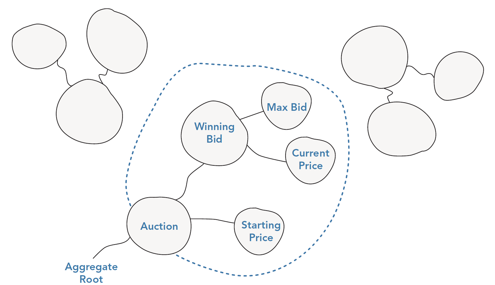Implementing Aggregates
Rule 1 - Selecting an Aggregate Root
Expose Behavioral Interfaces and Protect Internal State
public class Auction : Entity<Guid>
{
public Auction(Guid id, Guid itemId,
Money startingPrice, DateTime endsAt) { }
private Guid ItemId { get; set; }
private DateTime EndsAt { get; set; }
private Money StartingPrice { get; set; }
private WinningBid WinningBid { get; set; }
private bool HasEnded { get; set; }
public void ReduceTheStartingPrice() { }
public bool CanPlaceBid() { }
public void PlaceBidFor(Offer offer,
DateTime currentTime) { }
}
public class WinningBid : ValueObject<WinningBid>
{
public WinningBid(Guid bidder, Money maximumBid,
Money bid, DateTime timeOfBid) { }
public Guid Bidder { get; private set; }
public Money MaximumBid { get; private set; }
public DateTime TimeOfBid { get; private set; }
public Price CurrentAuctionPrice { get; private set; }
public WinningBid RaiseMaximumBidTo(Money newAmount) { }
public bool WasMadeBy(Guid bidder) { }
public bool CanBeExceededBy(Money offer) { }
public bool HasNotReachedMaximumBid() { }
}
- The public interfaces consist only of behavior
- All references to internal members of the objects are encapsulated as private member variables
- If an aggregate exposes getters and setters, the internals of the aggregate may be exposed.
Implementing Aggregates
Rule 1 - Selecting an Aggregate Root
Allowing only Roots to have Global Identity
-
DDD practitioners refer to local identity and global identity
-
That’s just a concise way of expressing that an aggregate root has a global identity because it can be accessed from outside the aggregate
- whereas other members of an aggregate have a local identity because they are internal to the aggregate
Implementing Aggregates
Rule 2 - Referencing Other Aggregates
Nothing outside an aggregate’s boundary may hold a reference to anything inside
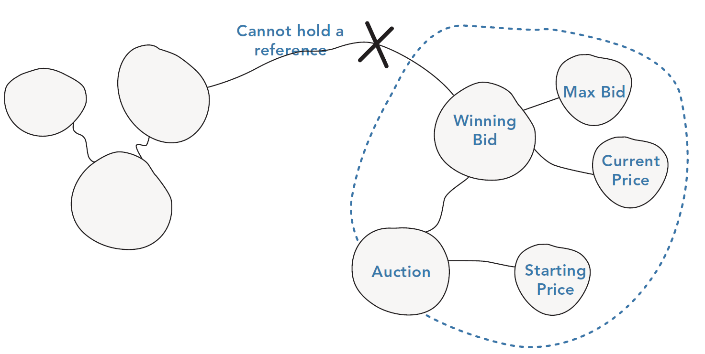Implementing Aggregates
Rule 2 - Referencing Other Aggregates
The Aggregate root can hand out transient references to the internal domain objects
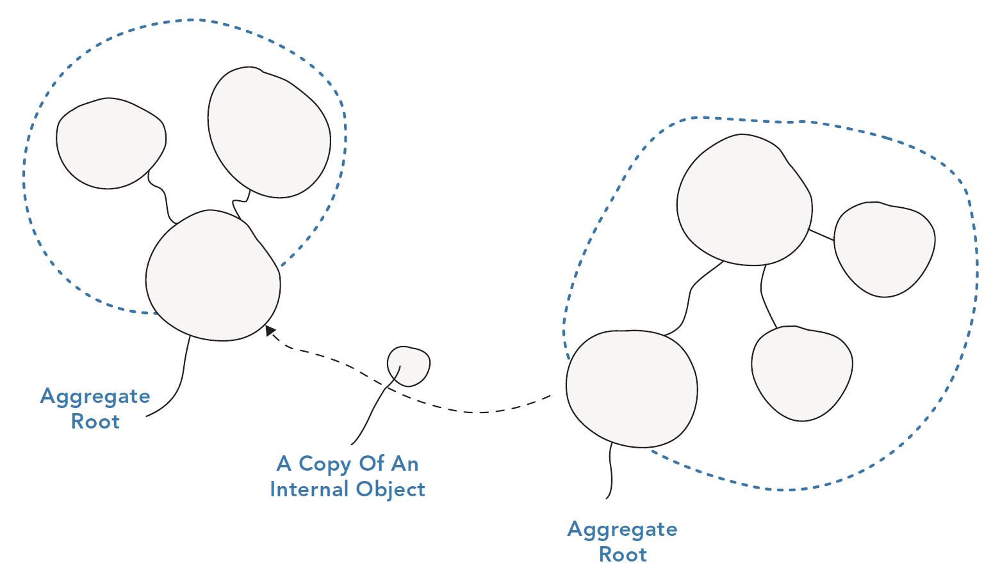Implementing Aggregates
Rule 2 - Referencing Other Aggregates
Objects within the aggregate can hold references to other aggregate roots
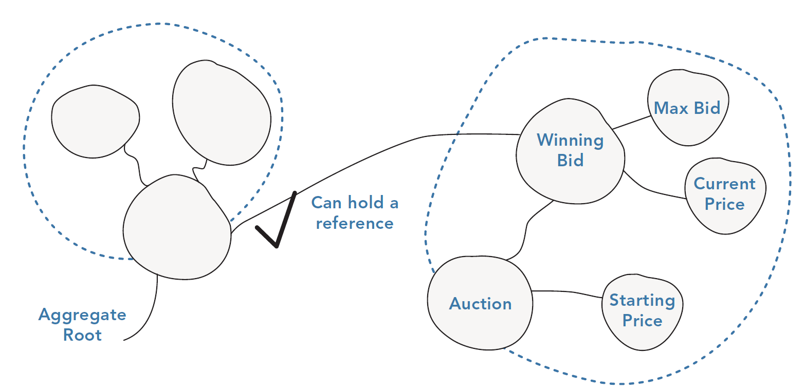Implementing Aggregates
Rule 3 - Implementing Persistence
-
Only aggregate roots can be obtained directly with database queries
- The domain objects that are inner components of the aggregate can be accessed only via the aggregate root
-
Each aggregate has a matching repository that abstracts the underlying database and that will only allow aggregates to be persisted and hydrated
- This is crucial in ensuring that invariants are met and aggregates are kept consistent
Implementing Aggregates
Rule 3 - Implementing Persistence
-
Sometimes, loading an entire aggregate is inefficient or unnecessary, when instead you just want to load a single domain object
- these scenarios are rare…
-
For reporting on the state of the domain, you need not worry about aggregates
- Reporting or querying can be performed directly at the database level without the need to hydrate domain objects
- The CQRS Pattern enforce this vision…
An Example
Tactical DDD to design microservices
Scenario
ACME, Inc. is starting a drone delivery service. The company manages a fleet of drone aircraft. Businesses register with the service, and users can request a drone to pick up goods for delivery. When a customer schedules a pickup, a backend system assigns a drone and notifies the user with an estimated delivery time. While the delivery is in progress, the customer can track the location of the drone, with a continuously updated ETA (Estimated Time of Arrival).
This scenario involves a fairly complicated domain. Some of the business concerns include scheduling drones, tracking packages, managing user accounts, and storing and analyzing historical data. Moreover, ACME wants to get to market quickly and then iterate quickly, adding new functionality and capabilities. The application needs to operate at cloud scale, with a high service level objective (SLO). ACME also expects that different parts of the system will have very different requirements for data storage and querying.
Drone Delivery Domain - A sketch
After some initial domain analysis, the ACME team came up with a rough sketch that depicts the Drone Delivery domain

Drone Delivery Domain - Details
- Shipping is placed in the center of the diagram, because it’s core to the business. Everything else in the diagram exists to enable this functionality.
- Drone management is also core to the business. Functionality that is closely related to drone management includes drone repair and using predictive analysis to predict when drones need servicing and maintenance.
- ETA analysis provides time estimates for pickup and delivery.
- Third-party transportation will enable the application to schedule alternative transportation methods if a package cannot be shipped entirely by drone.
- Drone sharing is a possible extension of the core business. The company may have excess drone capacity during certain hours, and could rent out drones that would otherwise be idle. This feature will not be in the initial release.
- Video surveillance is another area that the company might expand into later.
- User accounts, Invoicing, and Call center are subdomains that support the core business.
Drone Delivery Domain - Bounded Contexts

Applying Tactical Pattern to the Shipping Bounded Context
We start with the use-cases that the Shipping bounded context must handle
- A customer can request a drone to pick up goods from a business that is registered with the drone delivery service.
- The sender generates a tag (barcode or RFID) to put on the package.
- A drone will pick up and deliver a package from the source location to the destination location.
- When a customer schedules a delivery, the system provides an ETA based on route information, weather conditions, and historical data.
- When the drone is in flight, a user can track the current location and the latest ETA.
- Until a drone has picked up the package, the customer can cancel a delivery.
- The customer is notified when the delivery is completed.
- The sender can request delivery confirmation from the customer, in the form of a signature or finger print.
- Users can look up the history of a completed delivery.
Shipping Bounded Context - Tactical Concepts (1/3)
-
We can identify the following concepts:
- Delivery
- Package
- Drone
- Account
- Confirmation
- Notification
- Tag
-
The first four, Delivery, Package, Drone, and Account, are all aggregates that represent transactional consistency boundaries
- Confirmations and Notifications are child entities of Deliveries
- Tags are child entities of Packages
-
The value objects in this design include Location, ETA, PackageWeight, and PackageSize
Shipping Bounded Context - Tactical Concepts (2/3)
-
There are two domain events:
-
While a drone is in flight, the Drone entity sends DroneStatus events that describe the drone’s location and status (in-flight, landed)
-
The Delivery entity sends DeliveryTracking events whenever the stage of a delivery changes. These include DeliveryCreated, DeliveryRescheduled, DeliveryHeadedToDropoff, and DeliveryCompleted
-
-
We can recognize one more area of functionality, which doesn’t fit neatly into any of the entities described so far
- Some part of the system must coordinate all of the steps involved in scheduling or updating a delivery
- Therefore, we can add two domain services to the design:
- a Scheduler that coordinates the steps
- a Supervisor that monitors the status of each step, in order to detect whether any steps have failed or timed out
Shipping Bounded Context - Tactical Concepts (3/3)

From domain model to microservices - Guidelines
-
In general, the functionality in a microservice should not span more than one bounded context
- By definition, a bounded context marks the boundary of a particular domain model
- If you find that a microservice mixes different domain models together, that’s a sign that you may need to go back and refine your domain analysis
-
Look at the aggregates in your domain model
- Aggregates are often good candidates for microservices
- A well-designed aggregate exhibits many of the characteristics of a well-designed microservice, such as:
- An aggregate is derived from business requirements, rather than technical concerns such as data access or messaging
- An aggregate should have high functional cohesion
- An aggregate is a boundary of persistence
- Aggregates should be loosely coupled
From domain model to microservices - Guidelines
-
Domain services are also good candidates for microservices
- Domain services are stateless operations across multiple aggregates
- A typical example is a workflow that involves several microservices
-
Finally, consider non-functional requirements
- Look at factors such as team size, data types, technologies, scalability requirements, availability requirements, and security requirements
- These factors may lead you to further decompose a microservice into two or more smaller services, or do the opposite and combine several microservices into one
Microservices for the Shipping Bounded Context
We have identified four aggregates (Delivery, Package, Drone, and Account)
and two domain services (Scheduler and Supervisor)
-
Delivery and Package are obvious candidates for microservices
-
The Scheduler and Supervisor coordinate the activities performed by other microservices
- it makes sense to implement these domain services as microservices
-
Drone and Account are interesting because they belong to other bounded contexts
- Option 1 - the Scheduler calls the Drone and Account bounded contexts directly
- Option 2 - create Drone and Account microservices inside the Shipping bounded context
- Most likely, the best option is to keep the two bounded context (and related microservices) distinct from the Shipping one, using an ACL action as a “translator” (the Context Map must be designed before taking such a decision)
Microservices for the Shipping Bounded Context
Considering Non-functional Requirements…
-
Non-functional requirments lead us to create one additional service, to deal with throughput requirements
- A separate Ingestion microservice that is responsible for ingesting client requests
- The Scheduler will read the requests from the buffer and execute the workflow
-
More over, another requirments is about the need of storing the history of every delivery in a persistency data store
- This responsibility can be demanded to the Delivery service…
- …but could be appropriate to have another dedicate service for this purpose
- Delivery History service, reachable from the Delivery service via appropriate domain events
Microservices for the Shipping Bounded Context

…
Tactical Building Blocks
Details (Part 2)
Factories
The role of Factories
-
Aggregates, entities, and value objects can become complex when you’re creating a domain model for large and rich domains
- The knowledge of other objects’ invariants breaks the Single Responsibility Principle (SRP)
-
Object creation is not a domain concern, but it does live within the domain layer of an application
- You will rarely talk about factories to domain experts, but they do play an important role…
-
Factories can be used to reconstitute a domain object from a persistence model, or to create new domain objects, encapsulating complex creation logic
- The factory method pattern belongs to the creational group of the G0F design patterns
- It handles the issue of creating objects without specifying the exact class of object to be created
Separating Use from Construction
-
The main objective of the factory pattern is to hide the complexities of creating objects
- Complexities can include deciding what class to instantiate if a client depends on an abstraction, or it could be checking invariants
-
A secondary objective of a factory is to express the intent behind variations of an object instantiation
- Typically, this is hard to achieve using constructors only
-
Using factories, the client code can be completely ignorant of how dependent classes are created
- This follows the Dependency Inversion Principle…
-
Another benefit of the factory method pattern is related to the centralization of the code responsible to the creation of objects
- a change in the way an object is generated can be located and updated without affecting the code that depends on it
Encapsulating Internals
- When adding elements to an aggregate, it important to avoid to expose the structure of the aggregate
//Application Layer
public class AddProductToBasket
{
public void Add(Product product, Guid basketId)
{
var item = new BasketItem(
TaxRateService.ObtainTaxRateFor(product.Id,
country.Id), product.Id, product.price)
basketRepository.FindBy(basketId).Add(item);
}
}
- Here, the application service method is required to understand the logic behind how a
BasketItemis constructed- This is a responsibility it should not have as it should be concerned with coordination only
- You can avoid exposing the internals of the aggregate by adding a factory method
//Application Layer
public class AddProductToBasket
{
public void Add(Product product, Guid basketId)
{
basketRepository.FindBy(basketId).Add(product);
}
}
//Domain Layer
public class Basket
{
public void Add(Product product)
{
if (Contains(product))
GetItemFor(product).IncreaseItemQuantitBy(1);
else
items.Add(BasketItemFactory.CreateItem(product));
}
}
public class BasketItemFactory
{
public static BasketItem CreateItem(Product product)
=> new BasketItem(/* ... */)
}
Hiding Decisions on Creation Type
-
A factory can be used in the domain layer to abstract the type that a class requires
- if there are multiple choices
- if this choice is not the responsibility of the client class
-
The client codes against an interface or abstract class and leaves the factory class responsible for creating the concrete type
- if the correct type can’t be anticipated
Hiding Decisions on Creation Type - Example
public class Order
{
public Consignment CreateFor(IEnumerable<Item> items, destination)
{
var courier = CourierFactory.GetCourierFor(items, destination.Country);
var consignment = new Consignment(items, destination, courier);
SetAsDispatched(items, consignment);
return consignment;
}
}
public static Courier GetCourierFor(IEnumerable<Item> consignmentItems, DeliveryAddress destination)
{
if (AirMail.CanDeliver(consignmentItems, destination)) return new AirMail(consignmentItems, destination);
else
if (TrackedService.CanDeliver(consignmentItems, destination)) return new TrackedService(consignmentItems, destination);
else return new StandardMail(consignmentItems, destination);
}
-
An order can create consignments: this is itself a factory method but, to create a valid consignment must be selected a
Courier -
The Order class doesn’t know which
Courierto create, so it delegates toCourierFactory
Factory Methods on Aggregates
- A factory method can exist on an aggregate to hide the complexities of object creation from clients
public class Basket
{
public WishListItem MoveToWishList(Product product)
{
if (BasketContainsAnItemFor(product_snapshot))
{
var wishListItem = WishListItemFactory
.CreateFrom(GetItemFor(product));
RemoveItemFor(product);
return wishListItem;
}
}
}
- A factory method can create an aggregate itself
public class Account
{
public Order CreateOrder()
{
if (HasEnoughCreditToOrder()) return new Order(Id,
PaymentMethod, Address);
else throw new InsufficentCreditToCreateAnOrder();
}
public Order CreateAnOrderIgnoringCreditRating()
=> new Order(Id, PaymentMethod,
Address, PaymentType.PayBeforeShipping);
}
}
Factories’ Rationale
-
Factories can be effective to ensure that the domain model remains expressive
- they should only be used where they are effective and by no means everywhere an instance of an object needs to be instantiated
-
Use a factory when it is more expressive than a constructor or if it provides convenience where there is the confusion of more than one constructor
-
Use a factory where elements needed for construction logic are not the concern of the dependent class
Repositories
Repositories
-
A repository is used to manage aggregate persistence and retrieval
- ensuring that there is a separation between the domain model and the data model
-
It mediates between these two models by using a collection façade that hides the complexities of the underlying storage platform and any persistence framework
-
Repositories differ from traditional data access strategies in 3 ways:
- They restrict access to domain objects by only allowing the retrieval and persistence of aggregate roots, ensuring all changes and invariants are handled by aggregates
- They keep up the persistence-ignorant façade by hiding the underlying technology used to persist and retrieve aggregates
- They define a boundary between the domain model and the data model
An Example
-
The interface is kept within the domain model because it is part of the domain model, with the implementation residing in the technical infrastructure
-
A typical client of a repository is the application service layer
- A repository defines all the data-access methods that an application service requires to carry out a business task
//Domain Layer
public interface ICustomerRepository
{
Customer FindBy(Guid id);
void Add(Customer customer);
void Remove(Customer customer);
}
//Infrastructural Layer
public class CustomerRepository : ICustomerRepository
{
private ISession _session;
public CustomerRepository (ISession session)
{
_session = session;
}
public IEnumerable<Customer> FindBy(Guid id)
=> _session.Load<Order>(id);
public void Add(Customer customer) { session.Save(customer); }
public void Remove(Customer customer) { _session.Delete(customer); }
}
A MISUNDERSTOOD PATTERN
-
When it’s not used in conjunction with a rich domain model, the repository pattern is overly complex
- can be avoided for a simpler data access object (DAO) or better by using a persistence framework directly
-
However, when modeling a solution for a complex domain, the repository is an extension of the model
- It reveals the intent behind aggregate retrieval and can be written in a manner that is meaningful to the domain rather than a technical framework
- Without a repository layer, your persistence infrastructure will likely leak into the domain model and weaken its integrity and ultimately usefulness
-
The benefit to separating the data model from the domain model is that it allows you to evolve the domain model without having to constantly think of the data storage and how it will be persisted
A REPOSITORY IS AN EXPLICIT CONTRACT (1/2)
-
The contract of a repository is more than just a CRUD interface
- It is an extension of the domain model and is written in terms that the domain expert understands
- Your repository should be built from the needs of the application use cases rather than from a CRUD‐like data access standpoint
-
The application layer is the client that pulls aggregates from the repository and delegates work to them
-
The repository is not an object
- It is a procedural boundary and an explicit contract that requires just as much effort when naming methods upon it as the objects in your domain model do
-
The repository contract should be specific and intention revealing and mean something to your domain experts
A REPOSITORY IS AN EXPLICIT CONTRACT (2/2)
(implicit contract)
public interface ICustomerRepository
{
Customer FindBy(Guid id);
IEnumerable<Customer> FindAllThatMatch(Query query);
IEnumerable<Customer> FindAllThatMatch(String hql);
void Add(Customer customer);
}
(explicit contract)
public interface ICustomerRepository
{
Customer FindBy(Guid id);
IEnumerable<Customer> FindAllThatAreDeactivated();
IEnumerable<Customer> FindAllThatAreOverAllowedCredit();
void Add(Customer customer);
-
The repository is the contract between the domain model and the persistence store
- It should be written only in terms of the domain and without a thought to the underlying persistence framework
-
NOTE: Define intent and make it explicit!
- Do not treat the repository contract like object‐oriented code…
THE REPOSITORY AS AN ANTICORRUPTION LAYER
-
A repository can help keep the domain model pure by acting as an anticorruption layer
- enabling to create a model without its shape being affected by any underlying infrastructure complexities
-
Whatever persistence store is used, it should not shape the domain model!
- Repositories map to aggregates, not tables…
- Repositories can also store a model over more than a single data store
OTHER RESPONSIBILITIES OF A REPOSITORY
-
Entity ID Generation
- If the database or another infrastructural service controls the seeding of IDs, this can be asbstracted behind the repository and exposed to the application service
-
Collection Summaries
- Besides counting the number of aggregates you have in a collection, you may want some other summary information on what the collection contains without having to pull back each aggregate and summarize manually
-
Concurrency
- When multiple users are concurrently changing the state of a domain object, it is important that users are working against the latest version of an aggregate and that their changes don’t overwrite other changes that they are not aware of
-
Metadata (and Logging)
- A repository can be used if the data model requires metadata that does not make sense in the domain
Event Sourcing
Event Sourcing
-
Event sourcing allows businesses to deeply understand many aspects of their data, including detailed behavior of their customers
- A full history of activity is stored…
- With this historical information, new and novel queries can be asked that inform product development, marketing strategies, and other business decisions
-
Using event sourcing, it is possible to determine what the state of the system looked like at any given point in time and how it reached any of those states
- Many systems today store only the current state of the domain model, thereby precluding the opportunity to analyze historical behavior
-
Domain‐Driven Design (DDD) practitioners often like to combine event sourcing with CQRS as the basis for enhanced scalability and performance
Why adopting Event Sourcing?
-
If you only store the current state of your domain model, you don’t have a way of understanding how the system reached that
- you cannot analyze past behavior to uncover new insights or to work out what has gone wrong
-
You can acquire the ability to analyze full historical data by storing each event of significance in chronological order with its timestamp
- You then derive current state by replaying events
-
Significantly, you can do more than just work out the current state
- you can replay any subsequence of events to work out the state, and activity that caused it, for any point in history
Temporal Queries
-
Temporal queries are like the ability to travel back in time
- you can rewind the state of your domain model to a previous point in history
-
Replaying events is the mechanism that underlies temporal queries
-
Projections are the underlying feature that enables combining events from multiple streams to carry out complex temporal queries
- Projections are queries that map a set of input event streams onto one or more new output streams
Snapshots
-
A consequence of storing state as events is that event streams can grow very large, meaning that the time to replay events can continue to increase significantly
-
To avoid this performance hit, event stores use snapshots
- Snapshots are intermediate steps in an event stream that represent the state after replaying all previous events
- When an application wants to load the current state of an aggregate from an event stream, all it has to do is find the latest snapshot
- Then it need then only replay all the subsequent events in the stream
EVENT‐SOURCED AGGREGATES
-
For compatibility with event sourcing, aggregates need to be event-oriented
- They need to be able to calculate their state by applying a series of events
-
DDD practitioners find that a nice side effect of this is that their aggregates are more behavior oriented
- … providing heightened levels of domain event expressiveness!
- Moreover, persistence tends to be loosely coupled and less problematic
Aggregates for event‐sourced domain models
- There are a few key details involved in the creation of event-oriented aggregates:
- An aggregate must be able to apply a domain event and update its state according to the appropriate business rule(s)
- A list of uncommitted events needs to be maintained so that they can be persisted to an Event Store
- An aggregate needs to maintain a record of its version and provide the ability to create snapshots and restore from them
Persisting and Rehydrating
- Persisting event‐sourced aggregates is just a case of storing the uncommitted changes in an event store
- loading the aggregate, also known as rehydrating, requires you to load and replay all previously stored events, with the option to use snapshots as a shortcut
BENEFITS OF EVENT SOURCING
-
Competitive Business Advantage
-
Expressive Behavior‐Focused Aggregates
- Event‐sourced aggregates are almost declarative
When {Domain Event} {Apply Business Rules}
- This makes the domain model even more useful in knowledge‐crunching sessions
- Event‐sourced aggregates are almost declarative
-
Simplified Persistence
-
Superior Debugging (And Testing)